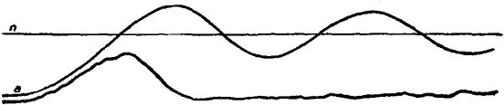
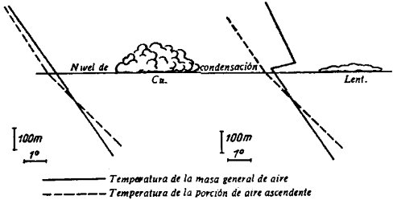
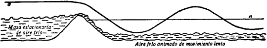
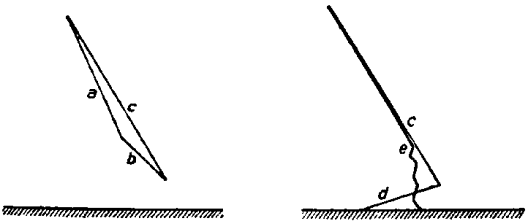
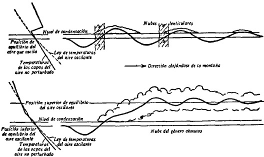
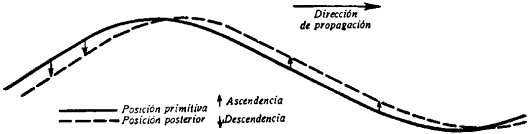

Manual del Vuelo a Vela
Wolf Hirth
1942
Movimiento ondulatorio a sotavento
por
el DOCTOR HÖHNDORF
Todas las
grandes masas de aire que formando un todo son separadas por alguna causa de su posición
de equilibrio o son obligadas a tomar otra posición, toman un movimiento oscilatorio
amortiguado respecto a la altura inicial. Durante este movimiento obran sobre esas masas
las fuerzas derivadas del principio de Arquímedes, además los fenómenos de turbulencia
en sus contornos, que determinan una mezcla, y finalmente el trabajo que consume la
energía del movimiento, realizado al penetrar durante él las masas de aire que rodean
a la que se mueve. Es indiferente cuál pueda ser la causa determinante del movimiento,
sea una potente elevación por un obstáculo, sea un recalentamiento. La oscilación
de la ascendencia térmica es un fenómeno corriente; las crestas de los cúmulos detrás
de algunas montanas se han tomado con cinematógrafo y, además, han sido objeto de
descripciones, y muchos pilotos alemanes conocen el fenómeno de este género que se
presenta a sotavento de Milseburg. Consideremos el fenómeno en un obstáculo de mucha
longitud y analicemos las posibilidades que pueden resultar de este movimiento
oscilatorio.
(Es
interesante decir el artificio empleado para hacer más patentes los movimientos del aire
en las nubes y demás fenómenos de la condensación del vapor de agua. Este artificio es
una modalidad de los efectos estroboscópicos, en los que se basa la sensación de
movimiento que da el cinematógrafo.
Se
obtienen vistas con una cámara cinematográfica lenta y se proyectan luego a la velocidad
normal; entonces todos los fenómenos se aceleran y aquellos movimientos que, por su
lentitud, se escapan a nuestra observación, se presentan ante nosotros con rapidez y
resultan completamente claros. Cuanto mayor sea la lentitud con que se tomen las vistas
sucesivas, mayor será el contraste del movimiento.
La
idea de aplicar este medio a los fenómenos de la atmósfera se debe al meteorólogo
español señor Fontseré.
El
que esto escribe tuvo ocasión de ver la proyección de numerosas películas obtenidas de
este modo en el congreso de vuelo sin motor celebrado en Budapest, en mayo de 1936, al
que asistió llevando la representación de España como miembro de la Istus.
Un
miembro de la representación francesa, Mr. Kampé de Feriet, proyectó películas de
formación de cúmulos, de invasión de niebla en un valle, de transformaciones del cielo,
etc.
Luego
tuvo ocasión de ver otras películas análogas en el establecimiento Alemán del Vuelo a
Vela y en el Instituto Meteorológico de Francfort, donde el intervalo de toma de vistas
era hasta de minutos, con lo que la sensación de transformación resultaba de una
evidencia extraordinaria. - N. del T.)
Para la
mayor parte de los cálculos de la Meteorología general el gradiente de 1º/100 m. es el
límite entre las estratificaciones, lábil y estable. Pero si luce el sol puede
producirse un calentamiento por la acción del suelo y entonces el límite inferior de
las posibilidades de vuelo a vela térmico está en 0,8º/100
m.,
es decir, con los 0,8º/100 m. y la radiación solar se determina un gran cambio en la
posición de las capas de aire inferiores, que da lugar a movimientos verticales de 2
m/seg. y más. Con un gradiente de 0,3º/100 m., que es el valor medio que se presenta en
las alturas superiores, cuando existen inversiones o isotermia, se puede descartar por
completo la posibilidad de influencias térmicas. En las consideraciones que siguen
tomaremos esas cifras como límites característicos de situaciones meteorológicas con
masas muy estables (0,3º/100 m.) y a punto de perder su estabilidad (0,8º/100 m.).
a) Situaciones en el límite de estabilidad, gradiente
0,8º/100
m. o más
Una porción de
aire recalentado, de las que se elevan ladera arriba, tiene su altura de equilibrio
cambiada por el calentamiento, de a a n. Si se supone una montaña de mucha
longitud en sentido normal al dibujo y que a su largo sean las mismas las condiciones del
suelo, todas las porciones de aire de la capa inferior deberán tomar movimientos
oscilatorios paralelos, cuyas amplitudes (longitud entre las posiciones extremas) y
períodos, lo mismo que la magnitud del cambio de nivel de a a n, sólo
dependen de la estratificación de temperaturas y del recalentamiento, mientras que la
longitud de la onda únicamente está determinada por la velocidad horizontal del viento
(Se
considera de interés añadir que la ondulación del aire es el movimiento resultante de
combinar la oscilación vertical a consecuencia del cambio de nivel de a a n,
producido por el calentamiento, con la traslación debida al viento horizontal. - N.
del T.).
Con gran
velocidad las partículas de aire en oscilación recorren un gran espacio en el tiempo de
una oscilación completa; la onda resulta rebajada, el campo de ascendencia (véase
apartado c)
se traslada con
relación al terreno, pero la intensidad de la ascendencia o componente vertical de la
velocidad permanece invariable. Todo el aire por encima de esas porciones recalentadas,
es decir, el que no ha tomado calor alguno del suelo, será arrastrado por las otras masas
en movimiento, mientras que el aire a sotavento del obstáculo fluirá obedeciendo a la
acción de las fuerzas determinadas por la repartición de presiones, derivada de la
situación general meteorológica correspondiente a la carta del tiempo. Esto es,
naturalmente, imposible hasta en un terreno ideal como el supuesto.

Fig. 118
La cortina de
aire formada por la ascendencia tiene que dislocarse y resolverse en ascendencias
aisladas; sea porque en algunos lugares aislados el terreno forme a modo de toberas en las
que se acumule el aire que es constantemente recalentado en el valle, sea que un cqmpo de
ascendencia de dimensiones importantes se forme y se desvanezca alternadamente, sea, por
fin, que surjan aquí y allá ascendencias aisladas. Además, hay que añadir los
torbellinos de sotavento que pueden formarse y que podrán desprenderse de tiempo en
tiempo, o bien tomarán carácter estacionario; las oscilaciones de pequeña amplitud
que también son posibles; pero lo más frecuente será una turbulencia general más o
menos regular, la cual irá desvaneciéndose poco a poco con el alejamiento del
obstáculo.

Fig. 119
N. del T. - Cu y Lent. son las abreviaturas con las que se representa en Meteorología a las nubes de los tipos cúmulos y Lenticulares.
Si el nivel de
la condensación es inferior a la cúspide del movimiento vertical de las porciones de
aire elevadas desde el valle, entonces se formarán detrás de la montaña nubes del tipo
cúmulo, las cuales coronarán los campos de ascendencia sucesivos, lo que ocurrirá
precisamente cuando la estratificación sea uniforme con relación a la altura superior
a la montaña, o bien se presentarán las nubes aplastadas de tipo lenticular, cuando en
esas alturas siguientes exista una inversión, resultando entonces, naturalmente,
deformada también la inversión, que tomará un cierto peralte. Con esto se producirán
oscilaciones de la superficie de inversión, las cuales, si hay resonancia, reforzarán
las oscilaciones inferiores o, en otro caso, influirán sobre ellas perturbándolas de
tiempo en tiempo. Estas observaciones pueden hacerse en el verano en cualquier cresta de
montañas. Si hay varias crestas paralelas, las circunstancias serán aún más
complicadas, sobre todo porque el aire de cada valle tendrá su ascendencia propia de
un modo continuo y el campo general de ascendencia se resolverá en ascendencias aisladas
que presentarán grandes variaciones con el tiempo, de lo que serán testimonio los
campos de nubes cúmulos o lenticulares que se formen.
b) Situaciones
meteorológicas con masas de aire muy estables,
gradiente
0,3º/100 m. o menor
Si existen
varias cadenas de montañas en cuyos valles hay aire frío en reposo, no se presentarán,
seguramente, ocasiones que determinen movimientos verticales, y se podrá considerar la
montaña como formada sólo por la cresta, que a veces será de mucha anchura, pero sin
que, naturalmente, detrás de ella haya otro obstáculo. Se debe hacer notar que las
circunstancias son ahora completamente las mismas que las existentes en la región de
sotavento de una meseta elevada cuando no hay radiación solar. La radiación emisiva del
terreno en invierno o durante la noche tiene por efecto la acumulación de aire frío
tanto en la zona de barlovento como en la de sotavento de una cordillera (Véase la
nota de la página 292. - N. del T.).
Una
depresión atmosférica que se acerque a esa cordillera aspira el aire frío de sotavento pero esto no sucede, desde luego, en la región
de barlovento, sino después y lentamente con una débil corriente que montará sobre la
cresta. Por consiguiente, resultará que, prácticamente, sólo estará el aire en reposo,
con casi calma completa, en el lado de barlovento y entonces el aire que fluya sobre la
cresta deberá descender en el lado de sotavento, y su posición de equilibrio se
modificará en sentido descendente, pasando de a a n y en este cambio de
posición se producirán igualmente oscilaciones. Debajo de estas masas oscilantes de aire
se producirán también torbellinos, etc., pero con mayor persistencia que en el caso
anterior, lo que ocurrirá principalmente si las masas de aire descendentes y, por
ello, recalentadas, chocan contra los restos de aire frío y se mezclan con ellos.

Fig. 120. Masa estacionaria de aire frío
Como las masas
de aire fluyen ahora en sección transversal mucho mayor, la velocidad del viento
superior en la zona de sotavento será menor que en la de barlovento. Además, con esa
ampliación de dimensiones, que equivale a una dilatación en sentido vertical, la
estratificación toma un estado lábil, que vuelve a ser estable a consecuencia de la
mezcla con el aire frío de la capa inferior.
Por
consiguiente, en los primeros momentos que siguen al comienzo del movimiento ondulatorio,
encontramos también en el lado de sotavento una estratificación muy estable en la zona
de las alturas inferiores. Como la estratificación de la zona superior depende de las
condiciones del aire en la corriente general, tendrá poco más o menos los caracteres
generales y valor medio de las situaciones meteorológicas de Europa Central, es decir,
0,6º/100 m., aun cuando en algunos casos el valor real del gradiente del aire en
movimiento pueda diferir mucho en uno y otro sentido, respecto a esa cifra media.

Fig. 121. La ley de
temperaturas sobre la montaña (a) se altera al descender el aire. La mayor
variación es la experimentada por la zona inferior (b), mientras que la
temperatura permanece invariable en la altura no influida. La temperatura en la zona de
sotavento sigue una ley, que es el resultado de componer la del aire oscilante (c)
y la del aire frío junto al suelo (d). La mezcla que se verifica da lugar,
finalmente, a las temperaturas realmente observadas (e).
El movimiento
ondulatorio del aire es perceptible con bastante intensidad hasta alturas de tres o cuatro
veces el valor del recorrido descendente, y por encima de este límite se desvanece
rápidamente. Si el nivel de condensación está bajo, se formará también en la zona de
sotavento una capa de nubes, que serán como antes del tipo cúmulo o lenticular, según
que la estratificación superior en el aire de la nube sea lábil o estable. En el primer
caso hay otra vez una traslación de la altura de equilibrio y la consiguiente
oscilación respecto a esa altura, que tendrá generalmente poca amplitud. Ambos casos
pueden ser observados en la práctica.
Si por
encima de la montaña, en la zona en la que tiene efecto la ondulación del aire, hubiese
una inversión, ésta se pondría también a oscilar y ejercería una influencia sobre el
fenómeno.
Como se
ve, las circunstancias que concurren en éste no son sencillas de explicar y es preciso
cierto hábito de reflexión sobre las cuestiones físicas de esta índole para llegar a
comprenderlas. La imagen que ofrece el agua, pasando sobre una presa de pequeña altura,
que entra en ondulación de forma análoga a la descrita para el aire, no basta, en el
estado actual de nuestros conocimientos, para representar los múltiples fenómenos de
que se compone el conjunto de corrientes que el piloto de velero presencia y siente en
el aire y que se observan en las nubes.
c) Ascendencias
en las inversiones oscilantes
(Nubes
lenticulares)
Sólo
aparentemente se puede considerar superfluo el recordar que la mejor ascendencia se
presenta allí donde existe el movimiento vertical del aire con mayor intensidad y no en
el
punto en el que el aire ha llegado a su altura máxima, en el que ya la velocidad es nula.

Fig. 122
En
la figura 122, el campo de ascendencia está en las zonas rayadas señaladas con una cruz
y no debajo o dentro de la nube lenticular. El velero subirá en tanto su velocidad de
descenso sea menor que la ascensional del aire, es decir el velero va pasando de una a
otra de las líneas de corriente del aire. Si su velocidad de vuelo es igual a la
velocidad horizontal del viento, subirá, visto desde el suelo, completamente según la
vertical, si está exactamente proa al viento. Si la velocidad del vuelo es mayor que la
del viento, habrá de volarse de través, como en el caso de apoyarse en ascendencia
orográfica, y si fuese menor al cabo de un cierto tiempo, el velero acabaría por entrar
en la descendencia. La penetración de la inversión oscilante es perfectamente
posible, pues lo permite la inclinación de las líneas de corriente, que es la
circunstancia importante para el vuelo, sin que importe la causa de esa inclinación.

Fig. 123
En
la ondulación a sotavento de un obstáculo se encuentra la mejor ascendencia cerca de la
montaña, es decir, a barlovento de la nube estacionaria lenticular que se forma, y
precisamente a un cuarto de la distancia de las crestas o centros de nube a nube. En las
inversiones se presentan también a veces oscilaciones libres (oleaje según la ley de
Helmholtz), exactamente lo mismo que en la superficie del agua, si la inversión está
acompañada de un salto en la velocidad del viento. Este oleaje se traslada lo mismo que
el del agua producido por el viento y a) si la « capa inferior está en calma »
en la dirección del viento superior y con una velocidad que, en primera aproximación,
puede admitirse ser la mitad de la del viento, y b) si « hay viento en ambas capas » en
la dirección del viento relativo y también con la velocidad, aproximadamente mitad de la
de ese viento.
El
avance de las nubes lenticulares en formación se puede deducir de la observación de su
sombra. Si la ondulación es móvil constituyendo oleaje, la mayor ascendencia no está
bajo las nubes, sino otra vez como antes, a la cuarta parte de la distancia de centro a
centro de nube, pero esta vez en la dirección del oleaje, es decir a sotavento de las
nubes. Según lo dicho, no se trata aquí de una ascendencia análoga a la orográfica, en
la región de barlovento del oleaje, pues el viento superior está modificado por la
traslación de las ondas (Fig. 123).
d) La nube Moazagotl
Hemos
hablado hasta ahora de oscilaciones, cuya explicación nos la ha podido dar la
Meteorología. Pero no es posible explicar por los métodos conocidos otros fenómenos,
tales como la formación de corrientes casi paralelas, en parte ascendentes, con
velocidades verticales crecientes de 5 m/seg. y más,
partiendo de una estratificación lábil, y extendiéndose hasta más de diez veces la
altura de la montaña, todo lo cual pasa en las regiones anterior y posterior de un
obstáculo hasta llegar a la estratosfera. La observación de que, a medida que aumenta
la altura, la ascendencia se encuentra al acercarse a la montaña más que al separarse de
ella, que, además, las nubes se forman primero arriba, hace pensar con verosimilitud en
que, en la alta Moazagotl, se trata de fenómenos debidos a una energía que tiene su
asiento en las alturas y que se propaga de arriba hacia abajo y no de abajo a arriba. Lo
que todavía está sin explicar es cómo intervienen en los fenómenos superiores los
otros fenómenos que tienen su origen junto al suelo y de los que se ha hablado antes, no
sabiéndose bien si es que las masas de aire experimentan una transformación, en el
sentido estricto de la palabra, condicionada por la situación general meteorológica que
abarque una gran extensión. Hay demostradas propiedades que podrían, aunque no de un
modo completo, explicar una oscilación hacia abajo de la estratosfera producida por la
caída de masas de aire falda abajo de una montaña. El problema podría darse por
resuelto si se pudiesen ordenar los distintos fenómenos en forma de que no diesen lugar a
contradicciones y que fuese posible cifrar, aunque no fuese más que aproximadamente, la
energía necesaria para su verificación, con explicación satisfactoria de su origen.
Habida
cuenta del gran número de fenómenos parciales que es preciso considerar, sus
modificaciones y recíprocas influencias para poder intentar una explicación de la nube
Moazagotl, y otros casos análogos de la atmósfera en las montañas, lo que debemos
únicamente hacer es sencillamente reflexionar sobre ello un momento con espíritu
agradecido y considerarlos como un presente que nos hace la Naturaleza, como tantos
otros obsequios que de ella recibimos sin poder decir cuál es su origen.
Lord
Kelvin estudió en 1886 un problema análogo de corrientes de agua, y Defant en 1923 las
oscilaciones de la estratosfera. Küttner aplica ambos resultados a la nube Moazagotl.
La idea fundamental de los tres trabajos es la siguiente: las masas de aire con
estratificación lábil, al ser perturbadas, se ponen a oscilar; si la velocidad de
propagación de esta oscilación es igual a la velocidad del viento, las crestas y
valles de la ondulación resultan estacionarios con relación al terreno, y en estas
condiciones la perturbación puede llegar a hacer que la amplitud de las oscilaciones
llegue a ser muy grande, aunque la oscilación inicial hubiese sido pequeña. Es de
esperar que quizá este camino lleve a la resolución del problema.